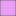

<!doctype html>
<html lang="en">
    <head>
        <meta charset="utf-8">
        <meta http-equiv="X-UA-Compatible" content="IE=edge">
        <meta name="viewport" content="initial-scale=1,user-scalable=no,maximum-scale=1,width=device-width">
        <meta name="mobile-web-app-capable" content="yes">
        <meta name="apple-mobile-web-app-capable" content="yes">
        <link rel="stylesheet" href="css/leaflet.css"><link rel="stylesheet" href="css/L.Control.Locate.min.css">
        <link rel="stylesheet" href="css/qgis2web.css"><link rel="stylesheet" href="css/fontawesome-all.min.css">
        <link rel="stylesheet" href="css/leaflet-control-geocoder.Geocoder.css">
        <style>
        html, body, #map {
            width: 100%;
            height: 100%;
            padding: 0;
            margin: 0;
        }
        </style>
        <title></title>
    </head>
    <body>
        <div id="map">
        </div>
        <script src="js/qgis2web_expressions.js"></script>
        <script src="js/leaflet.js"></script><script src="js/L.Control.Locate.min.js"></script>
        <script src="js/leaflet.rotatedMarker.js"></script>
        <script src="js/leaflet.pattern.js"></script>
        <script src="js/leaflet-hash.js"></script>
        <script src="js/Autolinker.min.js"></script>
        <script src="js/rbush.min.js"></script>
        <script src="js/labelgun.min.js"></script>
        <script src="js/labels.js"></script>
        <script src="js/leaflet-control-geocoder.Geocoder.js"></script>
        <script src="data/Administrasi_Geopark_Pongkor_1.js"></script>
        <script src="data/LokasiWisata_2.js"></script>
        <script>
        var map = L.map('map', {
            zoomControl:true, maxZoom:28, minZoom:1
        })
        var hash = new L.Hash(map);
        map.attributionControl.setPrefix('<a href="https://github.com/tomchadwin/qgis2web" target="_blank">qgis2web</a> &middot; <a href="https://leafletjs.com" title="A JS library for interactive maps">Leaflet</a> &middot; <a href="https://qgis.org">QGIS</a>');
        var autolinker = new Autolinker({truncate: {length: 30, location: 'smart'}});
        L.control.locate({locateOptions: {maxZoom: 19}}).addTo(map);
        var bounds_group = new L.featureGroup([]);
        function setBounds() {
            if (bounds_group.getLayers().length) {
                map.fitBounds(bounds_group.getBounds());
            }
        }
        map.createPane('pane_GoogleMaps_0');
        map.getPane('pane_GoogleMaps_0').style.zIndex = 400;
        var layer_GoogleMaps_0 = L.tileLayer('https://mt1.google.com/vt/lyrs=m&x={x}&y={y}&z={z}', {
            pane: 'pane_GoogleMaps_0',
            opacity: 1.0,
            attribution: '',
            minZoom: 1,
            maxZoom: 28,
            minNativeZoom: 0,
            maxNativeZoom: 19
        });
        layer_GoogleMaps_0;
        map.addLayer(layer_GoogleMaps_0);
        function pop_Administrasi_Geopark_Pongkor_1(feature, layer) {
            var popupContent = '<table>\
                    <tr>\
                        <th scope="row">KECAMATAN</th>\
                        <td>' + (feature.properties['KECAMATAN'] !== null ? autolinker.link(feature.properties['KECAMATAN'].toLocaleString()) : '') + '</td>\
                    </tr>\
                    <tr>\
                        <td colspan="2">' + (feature.properties['luaskec'] !== null ? autolinker.link(feature.properties['luaskec'].toLocaleString()) : '') + '</td>\
                    </tr>\
                    <tr>\
                        <th scope="row">Foto</th>\
                        <td>' + (feature.properties['Foto'] !== null ? '' : '') + '</td>\
                    </tr>\
                </table>';
            layer.bindPopup(popupContent, {maxHeight: 400});
        }

        function style_Administrasi_Geopark_Pongkor_1_0(feature) {
            switch(String(feature.properties['KECAMATAN'])) {
                case 'LEUWILIANG':
                    return {
                pane: 'pane_Administrasi_Geopark_Pongkor_1',
                opacity: 1,
                color: 'rgba(35,35,35,0.2)',
                dashArray: '',
                lineCap: 'butt',
                lineJoin: 'miter',
                weight: 1.0, 
                fill: true,
                fillOpacity: 1,
                fillColor: 'rgba(16,210,181,0.2)',
                interactive: true,
            }
                    break;
                case 'NANGGUNG':
                    return {
                pane: 'pane_Administrasi_Geopark_Pongkor_1',
                opacity: 1,
                color: 'rgba(35,35,35,0.2)',
                dashArray: '',
                lineCap: 'butt',
                lineJoin: 'miter',
                weight: 1.0, 
                fill: true,
                fillOpacity: 1,
                fillColor: 'rgba(207,102,116,0.2)',
                interactive: true,
            }
                    break;
                case 'PAMIJAHAN':
                    return {
                pane: 'pane_Administrasi_Geopark_Pongkor_1',
                opacity: 1,
                color: 'rgba(35,35,35,0.2)',
                dashArray: '',
                lineCap: 'butt',
                lineJoin: 'miter',
                weight: 1.0, 
                fill: true,
                fillOpacity: 1,
                fillColor: 'rgba(206,62,228,0.2)',
                interactive: true,
            }
                    break;
                case 'TAMANSARI':
                    return {
                pane: 'pane_Administrasi_Geopark_Pongkor_1',
                opacity: 1,
                color: 'rgba(35,35,35,0.2)',
                dashArray: '',
                lineCap: 'butt',
                lineJoin: 'miter',
                weight: 1.0, 
                fill: true,
                fillOpacity: 1,
                fillColor: 'rgba(194,167,14,0.2)',
                interactive: true,
            }
                    break;
                case 'TENJOLAYA':
                    return {
                pane: 'pane_Administrasi_Geopark_Pongkor_1',
                opacity: 1,
                color: 'rgba(35,35,35,0.2)',
                dashArray: '',
                lineCap: 'butt',
                lineJoin: 'miter',
                weight: 1.0, 
                fill: true,
                fillOpacity: 1,
                fillColor: 'rgba(65,204,41,0.2)',
                interactive: true,
            }
                    break;
            }
        }
        map.createPane('pane_Administrasi_Geopark_Pongkor_1');
        map.getPane('pane_Administrasi_Geopark_Pongkor_1').style.zIndex = 401;
        map.getPane('pane_Administrasi_Geopark_Pongkor_1').style['mix-blend-mode'] = 'normal';
        var layer_Administrasi_Geopark_Pongkor_1 = new L.geoJson(json_Administrasi_Geopark_Pongkor_1, {
            attribution: '',
            interactive: true,
            dataVar: 'json_Administrasi_Geopark_Pongkor_1',
            layerName: 'layer_Administrasi_Geopark_Pongkor_1',
            pane: 'pane_Administrasi_Geopark_Pongkor_1',
            onEachFeature: pop_Administrasi_Geopark_Pongkor_1,
            style: style_Administrasi_Geopark_Pongkor_1_0,
        });
        bounds_group.addLayer(layer_Administrasi_Geopark_Pongkor_1);
        map.addLayer(layer_Administrasi_Geopark_Pongkor_1);
        function pop_LokasiWisata_2(feature, layer) {
            var popupContent = '<table>\
                    <tr>\
                        <th scope="row">Name</th>\
                        <td>' + (feature.properties['Name'] !== null ? autolinker.link(feature.properties['Name'].toLocaleString()) : '') + '</td>\
                    </tr>\
                    <tr>\
                        <td colspan="2">' + (feature.properties['FolderPath'] !== null ? autolinker.link(feature.properties['FolderPath'].toLocaleString()) : '') + '</td>\
                    </tr>\
                    <tr>\
                        <td colspan="2">' + (feature.properties['X'] !== null ? autolinker.link(feature.properties['X'].toLocaleString()) : '') + '</td>\
                    </tr>\
                    <tr>\
                        <td colspan="2">' + (feature.properties['Y'] !== null ? autolinker.link(feature.properties['Y'].toLocaleString()) : '') + '</td>\
                    </tr>\
                    <tr>\
                        <th scope="row">Foto</th>\
                        <td>' + (feature.properties['Foto'] !== null ? '' : '') + '</td>\
                    </tr>\
                    <tr>\
                        <th scope="row">Deskripsi</th>\
                        <td>' + (feature.properties['Deskripsi'] !== null ? autolinker.link(feature.properties['Deskripsi'].toLocaleString()) : '') + '</td>\
                    </tr>\
                </table>';
            layer.bindPopup(popupContent, {maxHeight: 400});
        }

        function style_LokasiWisata_2_0() {
            return {
                pane: 'pane_LokasiWisata_2',
        rotationAngle: 0.0,
        rotationOrigin: 'center center',
        icon: L.icon({
            iconUrl: 'markers/blue-marker.svg',
            iconSize: [19.0, 19.0]
        }),
                interactive: true,
            }
        }
        map.createPane('pane_LokasiWisata_2');
        map.getPane('pane_LokasiWisata_2').style.zIndex = 402;
        map.getPane('pane_LokasiWisata_2').style['mix-blend-mode'] = 'normal';
        var layer_LokasiWisata_2 = new L.geoJson(json_LokasiWisata_2, {
            attribution: '',
            interactive: true,
            dataVar: 'json_LokasiWisata_2',
            layerName: 'layer_LokasiWisata_2',
            pane: 'pane_LokasiWisata_2',
            onEachFeature: pop_LokasiWisata_2,
            pointToLayer: function (feature, latlng) {
                var context = {
                    feature: feature,
                    variables: {}
                };
                return L.marker(latlng, style_LokasiWisata_2_0(feature));
            },
        });
        bounds_group.addLayer(layer_LokasiWisata_2);
        map.addLayer(layer_LokasiWisata_2);
        var osmGeocoder = new L.Control.Geocoder({
            collapsed: true,
            position: 'topleft',
            text: 'Search',
            title: 'Testing'
        }).addTo(map);
        document.getElementsByClassName('leaflet-control-geocoder-icon')[0]
        .className += ' fa fa-search';
        document.getElementsByClassName('leaflet-control-geocoder-icon')[0]
        .title += 'Search for a place';
        var baseMaps = {};
        L.control.layers(baseMaps,{' Lokasi Wisata': layer_LokasiWisata_2,'Administrasi_Geopark_Pongkor<br /><table><tr><td style="text-align: center;"></td><td>LEUWILIANG</td></tr><tr><td style="text-align: center;"></td><td>NANGGUNG</td></tr><tr><td style="text-align: center;"></td><td>PAMIJAHAN</td></tr><tr><td style="text-align: center;"></td><td>TAMANSARI</td></tr><tr><td style="text-align: center;"></td><td>TENJOLAYA</td></tr></table>': layer_Administrasi_Geopark_Pongkor_1,"Google Maps": layer_GoogleMaps_0,}).addTo(map);
        setBounds();
        var i = 0;
        layer_Administrasi_Geopark_Pongkor_1.eachLayer(function(layer) {
            var context = {
                feature: layer.feature,
                variables: {}
            };
            layer.bindTooltip((layer.feature.properties['KECAMATAN'] !== null?String('<div style="color: #323232; font-size: 10pt; font-weight: bold; font-family: \'Open Sans\', sans-serif;">' + layer.feature.properties['KECAMATAN']) + '</div>':''), {permanent: true, offset: [-0, -16], className: 'css_Administrasi_Geopark_Pongkor_1'});
            labels.push(layer);
            totalMarkers += 1;
              layer.added = true;
              addLabel(layer, i);
              i++;
        });
        var i = 0;
        layer_LokasiWisata_2.eachLayer(function(layer) {
            var context = {
                feature: layer.feature,
                variables: {}
            };
            layer.bindTooltip((layer.feature.properties['Name'] !== null?String('<div style="color: #323232; font-size: 10pt; font-family: \'Open Sans\', sans-serif;">' + layer.feature.properties['Name']) + '</div>':''), {permanent: true, offset: [-0, -16], className: 'css_LokasiWisata_2'});
            labels.push(layer);
            totalMarkers += 1;
              layer.added = true;
              addLabel(layer, i);
              i++;
        });
        resetLabels([layer_Administrasi_Geopark_Pongkor_1,layer_LokasiWisata_2]);
        map.on("zoomend", function(){
            resetLabels([layer_Administrasi_Geopark_Pongkor_1,layer_LokasiWisata_2]);
        });
        map.on("layeradd", function(){
            resetLabels([layer_Administrasi_Geopark_Pongkor_1,layer_LokasiWisata_2]);
        });
        map.on("layerremove", function(){
            resetLabels([layer_Administrasi_Geopark_Pongkor_1,layer_LokasiWisata_2]);
        });
        </script>
    </body>
</html>
